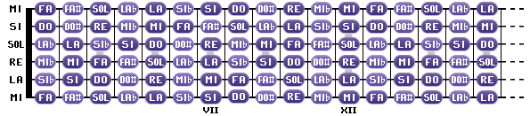

Pourquoi êtes-vous ici ? Car vous galérez ! Apprendre la guitare sur le tas ou sans faire de solfège est possible même sans apprendre les notes ! Les tablatures sur Internet de tel ou tel morceau est disponible partout, gratuitement ! (Personellement, mon prof de guitare a lui commencé en écoutant des cassettes et en jouant par dessus, et comme une cassette se rembobine, il fallait qu'il repasse tout le morceau !) Maintenant sur YouTube vous trouvez des "backing track" qui permettent de vous entraîner à jouer, vive la technologie et le progrès !
Mais tout d'abord, voici les notes sur un manche de guitare sachant que les cordes avides sont MI LA Ré SOL SI MI (E A D G B(H) E):
Les # (dièses) sont des notes plus hautes que les normales, et les b (bémols) sont des notes plus basses(sans oublier que l'ordre des notes en solfège est : do ré mi fa sol la si do (C D E F G A B(H) C).
Mais surtout il faut savoir que les # sont 1/2 ton au dessus (+1/2 ton = + 1 case), et les b en dessous (en précisant que entre mi et fa et si et do il n'y a qu'1/2 ton, contrairement aux autres notes.) Ainsi un dob (Cb) est un si et un si# (B#(H#)) est un do. Idem pour mi et fa.
C'est très simple, il suffit de connaître 3 notes pour faire un accord. Vous voulez faire un tube commercial ? Draguer une fille ? Prenez une série de 4 accords qui sont LA FA DO SOL. Un accord est une superposition de 3 notes successives, toutes separées d'une tierce : l'accord de LA donne : LA DO MI. Le nom de l'accord est le nom de sa première note (appelée la basse)... Bref, passons à la pratique.
Petite précision, les accords en anglais sont plus logiques, soit A B(H) C D E F G B(ou H pour les allemands car la clé de sol est constituée d'un H) (et A) . Ces accords se lisent LA SI DO RE MI FA SOL (et LA).

Voici comment positionner vos doigts. Attention ! Pour certains accords dont la basse n'est pas sur la première corde, jouez bien la corde de la basse, sinon ce ne sera pas agréable à l'oreille !
Les points sont vos doigts et les barrés sont assez compliquées à jouer, vous n'en aurez besoin que si vous faites des concerts à un niveau plus avancé.
Les accessoires sont divers et multiples, du médiator au capodastre, en passant par les sangles de guitares... Ces accessoires ne coûtent pas cher, et si vous voulez vous lancer directement dans la guitare éléctrique, pour faire des accords, le médiator est votre ami ! Vous avez peur de le perdre ? Achetez les en grand conditionnement, cela ne coûte que 0.5€ à 2€ unité (hormis les médiator dits "publicitaires") !
Voulez-vous chanter en plus de jouer ? Assurez vous de bien connaître le morceau et surtout sa STRUCTURE, entraînez vous séparément sur le même morceau au chant et à la guitare, et une fois que vous vous sentez prêt(e), combinez les deux ! =)
Voulez vous voir ce que cela donne après 12 ans de pratique ?
Voici mes vidéos de guitare, jetez y un oeil ou vos oreilles quand vous en aurez le temps et surtout l'envie !